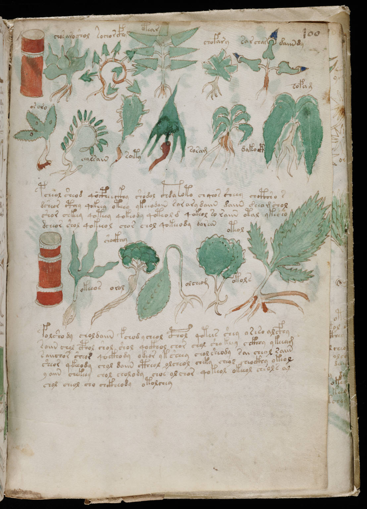

f100r
1chosaroshol2sochorcfhy3otear4chofary5sar chardaiindy6osaro7chalsain8soity9sosam10dakocth11sofal12pcheol sheod qocpheeckhy shodol cthdaoto ch qeos sheey chcthso s13dsheor cthey qokeey oteey ykeeodain sorary daiin daiin deeamshol14shor chkeey qoteey qokeody qoteold qokeol so raiin otal ykecho15dcheor shol qokeeol chor chol qokeeody dorean16okeeos17shockhey18orol19olcheom20okols21oteol22folshody chol daiin fchodycheol cphol qotees shey oreso alcfhy23soiin chol cphol shol shol qockhol chor chol sho keey cckhhy ykeeam24saiichor sheor qockhody odeor yksheey chol sheody sai cheol raiin25sheor qkeeody chol daiin ctheol olcheol cheky cheol cheockhy okeol26yaiin chekeey chol cholody chos olchor qokeol okeeol cheols al27chol cheol cho chckheody otolchey
